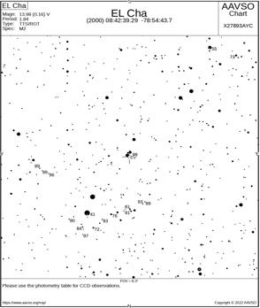

test alert message: number 2006
2022-04-12
Attn AAVSO observers
Colleagues:
An alert message entitled test alert message has been submitted by Peter Higgins with none on 2021-12-01 and was approved on 2022-04-12. This request is asking for community observation support beginning 2021-12-10 through 2021-12-30.
The justification given in this request is: testing.
The submitters instructions are: make observations
The submitters notes to observers follow: none
The submitters have included the following table:
Cadences selected are: hourly
Variability types indicated are: cataclymic variables
Modes of Observing selected are:
Photometry filters that may be used include:
For further information, AAVSO forums: Visit forum
Target stars are (* indicates not found in VSX):| Star | Con | MinV | MaxV | RA 2000 h:m:s | Dec 2000 d:m:s |
| VY | Scl | 11.8 | 18.6 | 23 29 0.47 | -29 46 46.0 |
| WX | Ari | 14.5 | 18.6 | 02 47 36.22 | +10 35 37.7 |
Thank you very much for your support.
Sincerely,
AAVSO staff